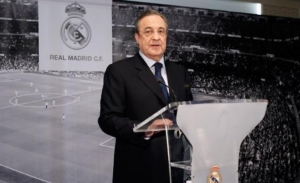
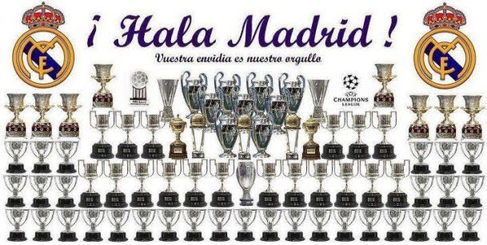

El Real Madrid Club de Fútbol, más conocido simplemente como Real Madrid, es una entidad polideportiva con sede en Madrid, España. Fue declarada oficialmente registrada como club de fútbol por sus socios el 6 de marzo de 1902 con el objeto de la práctica y desarrollo de este deporte.
Identificado por su color blanco —del que recibe el apelativo de «blancos» o «merengues», es uno de los cuatro clubes profesionales de fútbol del país cuya entidad jurídica no es la de sociedad anónima deportiva (S. A. D.), ya que su propiedad recae en sus más de 100 000 socios. Otra salvedad comparte con el Athletic Club y el Fútbol Club Barcelona al participar sin interrupción en la máxima categoría de la Liga Nacional de Fútbol Profesional,la Primera División de España, desde su establecimiento en 1929. En ella posee los honores de haber sido el primer líder histórico de la competición, el de club con más títulos, y el de la máxima puntuación en una sola edición.

El Real Madrid, nombrado mejor club del siglo XX, fue fundado el 6 de marzo de 1902 y en su historia que ya acumula más de un siglo se ha convertido en uno de los clubes de fútbol más importantes del mundo, a nivel deportivo, social y económico. Sus colores blancos, su escudo y los jugadores que los han defendido forman parte de una de las más grandes leyendas del deporte mundial y uno de los clubes más populares, tanto por seguimiento de sus partidos como por número de aficionados.
Por el club han pasado leyendas del fútbol mundial como Alfredo di Stéfano, Puskas, Gento, Butragueño, Raúl, Casillas, Zidane o Cristiano Ronaldo. Jugadores que, con sus logros, sus registros y sus esfuerzos, han contribuido a hacer más grande la historia del equipo madridista y a ampliar la sala de trofeos que actualmente se exhibe en las entrañas del Santiago Bernabéu. Sus futbolistas, siguiendo una línea cronológica desde aquellos campos de tierra en los que se jugaron los primeros rudimentarios partidos de football (aún en su nombre inglés) hasta la actualidad, han ido escribiendo con los pies el relato de un club que nació como 'Sociedad de juegos de Sport' y cuyo nombre ahora es conocido hasta en el más recóndito lugar del planeta.
Sus 13 Copas de Europa y sus 34 Ligas españolas colocan al Real Madrid en el escalafón más alto del fútbol nacional y continental. Su historia es una sucesión de triunfos en varios periodos de su larga vida, con algunos momentos especialmente exitosos y que han contribuido, entonces y ahora, a agrandar el palmarés y la leyenda del club de Chamartín.
El Real Madrid había aceptado el hecho de que el éxito que buscaba solo podía ser podía ser posible con los mejores jugadores. El portero Zamora y los defensas Ciriaco y Quincoces fueron fichados. El trío formaba la mejor defensa del mundo. La temporada 1931-32 fue histórica para el equipo entrenado por Lippo Hertza. Los merengues terminaron sin liga sin perder un solo partido. Fue el inicio de una era de dominancia del Real Madrid durante la II República: 2 ligas y 2 Copas en 4 años.
Solo un mes tras la victoria en la Copa de la República en 1936, estalló la Guerra Civil. El momento de gloria fue amenazado primero y destruido después por el conflicto militar. Muchos jugadores terminaron sus carreras o dejaron el país para marchar al exilio. El equipo no se recuperaría hasta mucho después de la guerra. El presidente del Real Madrid cuando empezó la el conflicto, Sánchez Guerra, fue exiliado, y un presidente interino, Antonio Ortega, fue ejecutado por el régimen franquista tras la Guerra Civil. Debido a la guerra en Madrid, el club intentó disputar la Liga Catalana Republicana ajena al conflicto, gracias en parte al entrenador catalán del club, Francisco Brau. Pero pese al apoyo del sindicato de jugadores y de todos los demás clubes catalanes, el F.C. Barcelona vetó su participación.
La Guerra Civil y la posguerra fueron durante más de una década una tragedia absoluta para el equipo. El Real Madrid no ganaría ninguna liga entre 1933 y 1954, su peor racha de su historia; y solamente 2 Copas, en 1946 y 1947. También estuvo en dos ocasiones al borde de descender a Segunda División. El rival local, el Atlético, era apoyado por el ejército que había ganado el conflicto. Por su parte, como club que había apoyado la República, no generaba simpatías en el régimen de Francisco Franco y durante los 15 primeros años del franquismo el club se encontró en la posición más débil de su historia.
En 1943, en las semifinales de Copa, el Real Madrid se enfrentó al F.C. Barcelona. En Les Corts, los azulgranas ganaron 3-0. En la vuelta, el Madrid eliminó a su rival con una remontada histórica. 11-0, y una rivalidad que ya existía se convirtió en eterna.
El 15 de diciembre de 1943 Santiago Bernabéu se convirtió en el presidente del club. Antiguo jugador y entrenador, se convirtió en el hombre más importante de la historia del Real Madrid.
Los periodistas franceses Gabriel Hanot y Jacques Ferrán soñaban con una competición que reuniera a los campeones de cada país europeo. Entre ellos hicieron una serie de normas que alcanzaron los cuarteles de la Union of European Football Associations (UEFA). La propuesta gustó mucho a los responsables del periódico francés L’Equipe, que se comprometió junto a la UEFA a organizar el torneo. Nombraron una comisión que incluyó a Santiago Bernabéu como uno de los vicepresidentes. El campeonato se convirtió en una realidad en 1956: había nacido la Copa de Europa.
El Real Madrid consiguió su primera Copa de Europa el 13 de junio de ese año. Sería la primera de cinco copas consecutivas que ganaría. Esta inigualable hazaña fue conseguida en parte gracias a uno de los más grandes futbolista de la historia, Alfredo Di Stéfano, bajo la presidencia de Santiago Bernabéu.
El Madrid descubrió a Di Stéfano en el 50 aniversario del club, en 1952, cuando el equipo se enfrentó al Millonarios. Desde entonces el club se fijó en él y finalmente logró ficharle. Se convirtió en el mejor jugador de la historia del Real Madrid siendo el líder del equipo que ganaría 5 Copas de Europa consecutivas, 8 ligas y se convertiría en la mayor dinastía de la historia del fútbol.
Ningún otro club ha logrado igualar sus hazañas. El equipo estaba compuesto de leyendas, aparte del argentino Alfredo di Stéfano, como el húngaro Ferenc Puskas, el francés Raymond Kopa o el español Francisco Gento, actual Presidente de honor del club y que tiene el récord único en el mundo de campeón de 6 Copas de Europa

En la temporada 1959-1960, el exjugador del club Miguel Muñoz se convirtió en entrenador. Ganó la quinta Copa de Europa consecutiva en su primera campaña como jugador y convirtió en el primero en ganar el trofeo como jugador (tres veces) y como técnico. En 1960 los merengues serían coronados como los primeros campeones del mundo al ganar la primera edición de la Copa Intercontinental, venciendo 5-1 al Peñarol de Montevideo.
En los 60 el equipo se enfrentó a un período de cambios. En España dominó sin rival, ganando 8 títulos de Liga en esa década: en los 50 el club había ganado más Copas de Europa que ligas. Y además consiguió la Sexta Copa de Europa en 1966 (ese año no ganó la Liga).
El fútbol se vistió de luto cuando el 2 de junio de 1978 falleció el presidente que había llevado el Real Madrid a lo más alto. Los 70 habían sido la única década desde la creación de las competiciones europeas en la cual el Madrid no había conseguido ningún título internacional, aunque a cambio consiguió otras 6 ligas en esa década.
Los 80 fueron dominados por una generación de jóvenes jugadores. La Quinta del Buitre, lideradas por Emilio Butragueño, hizo al Real Madrid uno de los mejores equipos de la historia. Los goles de Hugo Sánchez ayudaron a coronar una década de éxitos. El club ganó 2 Copas de la UEFA con remontadas históricas en Europa y noches mágicas en el Bernabéu. El club también ganó 5 ligas seguidas, un récord en España, entre 1986 y 1990.
Real Madrid comenzaría entonces una nueva era dorada. Primero, 32 años después, volvió a ser campeón de Europa. Pero no solamente una vez: ganó 3 Ligas de Campeones en 5 años: la Séptima en 1998, la Octava en el 2000 y la Novena en 2002. El canterano Raúl y leyendas como Hierro, Roberto Carlos o Redondo acompañaron los triunfos.
En el año 2000 Florentino Pérez llegó a la presidencia y comenzó la denominada época de los Galácticos. En esos 4 primeros años se ganó 1 Champions League(la Novena Copa de Europa) 2 ligas y creó un equipo de ensueño con las mejores estrellas del mundo del fútbol: Figo, Zidane, Ronaldo, Beckham se unían a Raúl, Hierro o Casillas.
El Real Madrid ganó 2 ligas más en 2007 y 2008 bajo la dirección de Fabio Capello y Bernd Schuster. Pero tras una horrible temporada 2009, Florentino Pérez volvió a la presidencia para intentar devolver la moral del madridismo y reforzar el equipo.
En el segundo mandato de Florentino fichó al mejor jugador del Real Madrid tras Di Stéfano, Cristiano Ronaldo, y una pléyade de estrellas como Benzema, Xabi Alonso, Luka Modric, Gareth Bale o Toni Kroos. Técnicos estrellas como José Mourinho, Carlo Ancelotti o el novato y antigua leyenda del fútbol como Zinedine Zidane entrenaron al equipo.
En estos años, el Real Madrid ganó 2 Champions League en dos finales de infarto contra los rivales de la ciudad, el Atlético de Madrid, con heroicas actuaciones del capitán y leyenda Sergio Ramos. La Décima llegó en 2014 tras 12 años de sequía europea gracias a un gol en el minuto 93 y la Undécima en una tanda de penaltis en 2016. El club además ganó una liga en 2012 que batió todos los records nacionales con 100 puntos y 121 goles.
Tanto las temporadas 2016-2017 como 2018-19 fueron históricas. En 2017 el Real Madrid se convirtió en el primer equipo que repetía título en el formato Champions League y la primera vez desde 1958 que el club obtenía tanto la Liga como la Copa de Europa. Junto al Mundial de Clubes y las Supercopa de España y Europas se convirtió en el mejor año de la historia del Real Madrid como club de fútbol.
En la temporada 2018-19, el Real Madrid se convirtió en el primer club deportivo que ganaba tanto la Copa de Europa de fútbol como de baloncesto (la Décima de esta sección) el mismo año. La 13ª Copa de Europa fue también la tercera consecutiva y la cuarta en 5 años. Es una dinastía comparada con ninguna otra del fútbol…excepto el Real Madrid de Bernabéu, Di Stéfano y Gento.
El Real Madrid es el rey de Europa y España y aunque los rivales han ido y venido para enfrentarse a él en la historia del fútbol, nadie se acerca a su legado.
El estadio Santiago Bernabéu tiene una capacidad de 81.000 espectadores. En torno a un 80% del aforo está ocupado por socios del Real Madrid que tienen un abono, mientras que el resto de las entradas se venden al público general.
El real madrid tiene un total de 92 titulos en todas sus competiciones convirtiendose en el 6 equipo con mas titulos en el mundo.
La Saeta Di Stéfano es junto a Pelé, Beckenbauer, Maradona y Cruyff; uno de los mejores jugadores del siglo XX. En el Real Madrid, él consiguió marcar 307 goles, en 403 partidos oficiales, a lo largo de 11 temporadas. Estas cifras lo sitúan en el primer lugar de la lista de los mejores jugadores de la historia del Real Madrid.
Zinedine Zidane fue un mago con el balón. Él consiguió muchos reconocimientos con el Madrid, pero la afición recuerda sobre todo su espléndido gol en la final de la Champions League. Zidane no solo es uno de los mejores jugadores de la historia del Real Madrid, sino de todo el fútbol mundial.
Raúl González, el ángel de Madrid, es una leyenda del club blanco que consiguió todos los títulos posibles durante las 16 temporada que vistió esta camiseta. Siempre será muy recordado por la afición madridista como uno de los mejores delanteros de la historia del club.
Ronaldo es uno de los grandes goleadores que han pasado por el Madrid. Él no solo ha dejado huella en el equipo blanco, sino también en la selección brasileña. Ronaldo también es otro de los mejores jugadores de la historia no solo del Real Madrid, sino también de todo el fútbol.
Paco Gento es el futbolista que ha ganado más Copas de Europa. Además de ello, Gento consiguió 12 Ligas con el Real Madrid. Estas cifras han hecho que Gento ingrese a la lista de los mejores de la historia.
Iker Casillas es el único portero de la historia en conseguir el reconocimiento de Mejor Portero del Mundo en cuatro ocasiones consecutivas. Fue una pieza fundamental del Real Madrid y de la selección española durante los años que estuvo en estos equipos.

Manolo Sanchís, uno de los históricos capitanes del Real Madrid, militó en el club blanco desde 1983 hasta el 2001. Su entrega y cariño por el club lo han convertido en uno de los mejores jugadores de la historia madridista.
Emilio Butragueño fue el líder de una generación de futbolistas del Madrid conocida como la Quinta del Buitre. Entre otros títulos, él consiguió 6 Ligas, 2 Copas del Rey, 2 Copas UEFA y 1 Copa de la Liga.
Cristiano Ronaldo, como el Real Madrid, ha convertido la Champions League en su jardín particular. El portugués ostenta el récord de más partidos seguidos de Champions marcando (11) y es el único en haber marcado en todos los partidos de una fase de grupos. Además, desde que se instaurara el nuevo formato, Cristiano Ronaldo es el único en haber logrado ganar cinco finales, consiguiendo anotar en tres de ellas; más récords.